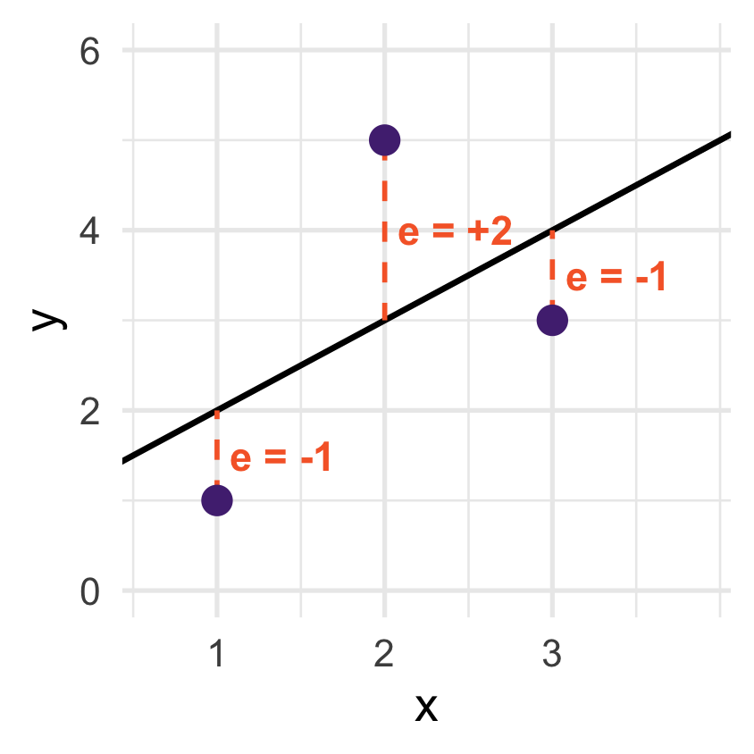

[1] 142 6We can fit several predictors and say what “controlling for” means
But we have never written down the formula that produces those coefficients
With one predictor we had a clean formula. With five, writing \(\hat{\beta}_3\) out in sums takes most of a page.
We want one expression valid for any number of predictors. That is the “very basic matrix algebra” I promised (threatened?) on the first day.
Put the outcome in a vector and the predictors in a design matrix, with a leading column of 1s for the intercept:
\[\mathbf{y} = \begin{bmatrix} y_1 \\ \vdots \\ y_n \end{bmatrix} \qquad \mathbf{X} = \begin{bmatrix} 1 & x_{11} & \cdots & x_{1k} \\ \vdots & \vdots & & \vdots \\ 1 & x_{n1} & \cdots & x_{nk} \end{bmatrix} \qquad \mathbf{y} = \mathbf{X}\boldsymbol{\beta} + \boldsymbol{\varepsilon}\]
\(\mathbf{X}\) is \(n \times (k+1)\): a row per observation, a column per coefficient
\(\mathbf{X}'\) is the transpose (rows become columns); \(\mathbf{A}^{-1}\) is the inverse, the matrix analogue of dividing
Heads-up: bold capitals here mean matrices, not random variables
The sum of squared residuals is the dot product of a vector with itself:
\[S(\boldsymbol{\beta}) = \sum_i (y_i - \mathbf{x}_i'\boldsymbol{\beta})^2 = (\mathbf{y} - \mathbf{X}\boldsymbol{\beta})'(\mathbf{y} - \mathbf{X}\boldsymbol{\beta})\]
Expanding, and using that \(\boldsymbol{\beta}'\mathbf{X}'\mathbf{y}\) is a scalar (so it equals its own transpose):
\[S(\boldsymbol{\beta}) = \mathbf{y}'\mathbf{y} - 2\boldsymbol{\beta}'\mathbf{X}'\mathbf{y} + \boldsymbol{\beta}'\mathbf{X}'\mathbf{X}\boldsymbol{\beta}\]
Two matrix derivative rules:
\[\frac{\partial}{\partial \boldsymbol{\beta}}\big(\boldsymbol{\beta}'\mathbf{a}\big) = \mathbf{a} \qquad \frac{\partial}{\partial \boldsymbol{\beta}}\big(\boldsymbol{\beta}'\mathbf{A}\boldsymbol{\beta}\big) = 2\mathbf{A}\boldsymbol{\beta}\]
Applying them to \(S(\boldsymbol{\beta})\) and setting the result to zero:
\[-2\mathbf{X}'\mathbf{y} + 2\mathbf{X}'\mathbf{X}\hat{\boldsymbol{\beta}} = \mathbf{0} \qquad\Longrightarrow\qquad \mathbf{X}'\mathbf{X}\hat{\boldsymbol{\beta}} = \mathbf{X}'\mathbf{y}\]
These are the normal equations - and note they say \(\mathbf{X}'(\mathbf{y} - \mathbf{X}\hat{\boldsymbol{\beta}}) = \mathbf{X}'\mathbf{e} = \mathbf{0}\), which is exactly the orthogonality of errors we proved earlier.
Multiply through by \((\mathbf{X}'\mathbf{X})^{-1}\):
\[\boxed{\;\hat{\boldsymbol{\beta}} = (\mathbf{X}'\mathbf{X})^{-1}\mathbf{X}'\mathbf{y}\;}\]
[1] 20.137558 4.630775 11.694203 10.114425 11.268222 12.929311 (Intercept) lgdp continentAmericas continentAsia
20.137558 4.630775 11.694203 10.114425
continentEurope continentOceania
11.268222 12.929311 Identical to ten decimals. This is what lm computes.
\(\mathbf{X}'\mathbf{X}\) — cross-products among the predictors: how they covary with each other
\(\mathbf{X}'\mathbf{y}\) — how each predictor covaries with the outcome
\((\mathbf{X}'\mathbf{X})^{-1}\) — the step that adjusts for overlap among predictors
With one predictor this collapses to \(\widehat{\text{Cov}}(X,Y)/\widehat{\text{Var}}(X)\). Same object, written in Matrix Form.
\[\hat{\mathbf{y}} = \mathbf{X}\hat{\boldsymbol{\beta}} = \underbrace{\mathbf{X}(\mathbf{X}'\mathbf{X})^{-1}\mathbf{X}'}_{\mathbf{H}}\,\mathbf{y}\]
\(\mathbf{H}\) is the hat matrix — it puts the hat on \(\mathbf{y}\). It is idempotent (\(\mathbf{HH} = \mathbf{H}\)): fitting projects \(\mathbf{y}\) onto the space spanned by \(\mathbf{X}\), and projecting twice changes nothing.
Three made-up observations, so the picture fits in three dimensions:

The usual picture: three points in two dimensions, one line, three residuals
Now flip it: make each variable an arrow, with one axis per observation. \(\mathbf{y} = (1, 5, 3)\), \(\mathbf{1} = (1, 1, 1)\), \(\mathbf{x} = (1, 2, 3)\)
Every possible fit \(b_0\mathbf{1} + b_1\mathbf{x}\) lies in the plane those two arrows span
Least squares picks the point in that plane closest to \(\mathbf{y}\)
Drag to rotate. \(\hat{\mathbf{y}} = \mathbf{H}\mathbf{y}\) = (2, 3, 4) is the shadow of \(\mathbf{y}\) on the plane
\(\mathbf{e}\) = (-1, 2, -1) meets the plane at a right angle: \(\mathbf{e}\cdot\mathbf{1}\) = 0 and \(\mathbf{e}\cdot\mathbf{x}\) = 0. That is \(\mathbf{X}'\mathbf{e} = \mathbf{0}\)
So Pythagoras holds: \(\|\mathbf{y}\|^2 = \|\hat{\mathbf{y}}\|^2 + \|\mathbf{e}\|^2\), here 35 = 29 + 6. Every other point in the plane is farther from \(\mathbf{y}\)
\[\text{Var}(\hat{\boldsymbol{\beta}}) = \sigma_\varepsilon^{2}\,(\mathbf{X}'\mathbf{X})^{-1}\]
(Intercept) lgdp continentAmericas continentAsia
4.0331932 0.5274123 1.6545668 1.4761163
continentEurope continentOceania
1.8935733 4.5210920 The diagonal gives the standard errors — exactly what summary() prints
The off-diagonals are covariances between coefficients, which you will need for interaction marginal effects later
Near-collinearity makes \((\mathbf{X}'\mathbf{X})^{-1}\) large, so the same inverse determines both the estimates and their precision